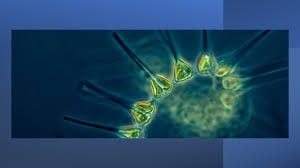
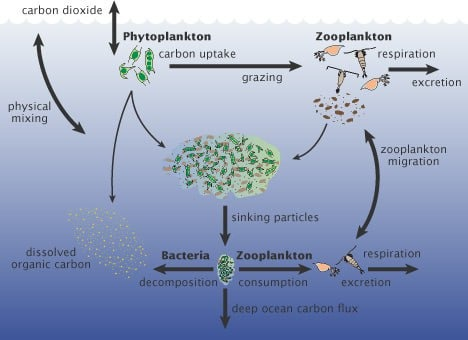

Planktons
Derived from the Greek words phyto (plant) and plankton (made to wander or drift), phytoplankton are microscopic organisms that live in watery environments, both salty and fresh.
Some phytoplankton are bacteria, some are protists, and most are single-celled plants. Among the common kinds are cyanobacteria, silica-encased diatoms, dinoflagellates, green algae, and chalk-coated coccolithophores.
Phytoplankton are extremely diverse, varying from photosynthesizing bacteria (cyanobacteria), to plant-like diatoms, to armor-plated coccolithophores (drawings not to scale). (Collage adapted from drawings and micrographs by Sally Bensusen, NASA EOS Project Science Office.) Like land plants, phytoplankton have chlorophyll to capture sunlight, and they use photosynthesis to turn it into chemical energy. They consume carbon dioxide, and release oxygen. All phytoplankton photosynthesize, but some get additional energy by consuming other organisms.
Phytoplankton growth depends on the availability of carbon dioxide, sunlight, and nutrients. Phytoplankton, like land plants, require nutrients such as nitrate, phosphate, silicate, and calcium at various levels depending on the species.
Some phytoplankton can fix nitrogen and can grow in areas where nitrate concentrations are low. They also require trace amounts of iron which limits phytoplankton growth in large areas of the ocean because iron concentrations are very low.
Other factors influence phytoplankton growth rates, including water temperature and salinity, water depth, wind, and what kinds of predators are grazing on them. When conditions are right, phytoplankton populations can grow explosively, a phenomenon known as a bloom. Blooms in the ocean may cover hundreds of square kilometers and are easily visible in satellite images. A bloom may last several weeks, but the life span of any individual phytoplankton is rarely more than a few days.

Importance of phytoplankton
The food web
Phytoplankton are the foundation of the aquatic food web, the primary producers, feeding everything from microscopic, animal-like zooplankton to multi-ton whales. Small fish and invertebrates also graze on the plant-like organisms, and then those smaller animals are eaten by bigger ones.
Climate and the Carbon Cycle
Through photosynthesis, phytoplankton consume carbon dioxide on a scale equivalent to forests and other land plants. Some of this carbon is carried to the deep ocean when phytoplankton die, and some is transferred to different layers of the ocean as phytoplankton are eaten by other creatures, which themselves reproduce, generate waste, and die. Worldwide, this “biological carbon pump” transfers about 10 gigatonnes of carbon from the atmosphere to the deep ocean each year. Even small changes in the growth of phytoplankton may affect atmospheric carbon dioxide concentrations, which would feed back to global surface temperatures.

Land Gardens
Ocean Gardens
Organzions
Oceana
Oceana is a really big group that cares a lot about protecting the oceans and the life inside them. It started in 2001 and has won many fights to help marine animals and their homes. They work to stop things like pollution from oil and other sources, and they also want to protect special places in the oceans like the Arctic and different islands. They do a lot to keep the oceans safe and clean.
Support Them
The Monterey Bay Aquarium
The Monterey Bay Aquarium is a special place that shows off the amazing life in the ocean. It also works hard to protect marine animals and their homes. The aquarium helps save animals like sea otters and white sharks. They talk about important ocean problems locally and internationally. They also study sharks, tuna, and sea otters to understand how to keep them safe. Plus, they teach people and businesses how to choose seafood that doesn't harm the ocean. They do a lot to make sure our oceans stay healthy.
Support Them
Sea Shepherd Conservation Society
This group deserves recognition while being fairly contentious. The Earth Force Society was established in 1977 by Paul Watson, a former Greenpeace member, and is now most known for interfering with Japanese whaling operations in the Southern Ocean. In order to preserve and safeguard ecosystems and species, Sea Shepherd seeks to put an end to the habitat damage and animal killing that occurs throughout the world's oceans. They employ cutting-edge direct-action non-lethal techniques, such as scuttling and immobilizing whaling vessels, interfering with seal hunts, and hurling bottles of pungent butyric acid against whaling vessels at sea, among others.
Support Them
Greenpeace
A multinational organization called Greenpeace uses non-violent creative action to combat environmental crimes. The organization's principal objectives are to save all types of biodiversity, stop pollution and abuse of the oceans, land, air, and fresh water on the planet, put an end to nuclear dangers, and advance world peace, disarmament, and nonviolence. The group works on a number of issues specifically related to the marine environment. Greenpeace urges large firms to lessen their plastic impact in order to stop the flow of plastic into our oceans through its extensive global networks. The organization also works to address climate change, ocean acidification, and unsustainable industrial fishing methods.
Support Them